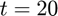

AB2
Adams-Bashforth 2nd-order method.
Back to ODE Solver Toolbox Contents.
Contents
Syntax
[t,y] = AB2(f,[t0,tf],y0,h)
[t,y] = AB2(f,{t0,C},y0,h)
[t,y] = AB2(__,wb)
Description
[t,y] = AB2(f,[t0,tf],y0,h) solves the ODE defined by f(t,y) from t0 until tf using the Adams-Bashforth 2nd-order method with an initial condition y0 and step size h.
[t,y] = AB2(f,{t0,C},y0,h) does the same as the syntax above, but instead of terminating at a final time tf, the solver terminates once the condition function C(t,y) is no longer satisfied.
[t,y] = AB2(...,wb) can be used with either of the syntaxes above to define a waitbar. If wb is input as true, then a waitbar is displayed with the default message 'Solving ODE...'. To specify a custom waitbar message, input wb as a char array storing the desired message.
Input/Output Parameters
| Variable | Symbol | Description | Format | |
| Input | f | multivariate, vector-valued function ( - inputs to f are the current time (t, 1×1 double) and the current state vector (y, p×1 double) - output of f is the state vector derivative (dydt, p×1 double) at the current time/state |
1×1 function_handle |
|
| t0 | initial time | 1×1 double |
||
| tf | final time | 1×1 double |
||
| C | condition function ( - inputs are the current time (t, 1×1 double) and the current state vector (y, p×1 double) - output is a 1×1 logical (true if solver should continue running, false if solver should terminate) |
1×1 function_handle |
||
| y0 | initial condition | p×1 double |
||
| h | step size | 1×1 double |
||
| wb | - | waitbar parameters - input as "true" if you want waitbar with default message displayed - input as a char array storing a message if you want a custom message displayed on the waitbar |
char array or 1×1 logical |
|
| Output | t | time vector | (N+1)×1 double |
|
| y | solution matrix - the nth row of y stores the transpose of the solution corresponding to the nth time in t (see below) |
(N+1)×p double |
Time vector and solution matrix:
Example #1: Time detection.
Consider the Lorenz system, with , , and :

Plot the solution of this system for in the interval .
First, we can rewrite this system in vector form by letting , , , and .

Defining the system and its initial condition in MATLAB,
% Lorenz parameters rho = 28; sigma = 10; beta = 8/3; % Lorenz equations in vector form f = @(t,x) [sigma*(x(2)-x(1)); x(1)*(rho-x(3))-x(2); x(1)*x(2)-beta*x(3)]; % initial condition x0 = [0; 1; 1.05];
Solving the system for in the interval using a time step (i.e. step size) of ,
[t,x] = AB2(f,[0,100],x0,0.001);
Plotting the solution,
figure; plot3(x(:,1),x(:,2),x(:,3)); view(45,20); grid on; xlabel('$x$','Interpreter','latex','FontSize',18); ylabel('$y$','Interpreter','latex','FontSize',18); zlabel('$z$','Interpreter','latex','FontSize',18);
Example #2: Event detection.
Consider the initial value problem
Find the solution until .
First, let's define our ODE () and initial condition in MATLAB.
f = @(t,y) y; y2 = 3;
Next, let's define the condition function, . Since we want to continue solving until , we want the solver to run while ; this forms our condition. Therefore,
C = @(t,y) y <= 10;
Solving for using a step size of  ,
,
[t,y] = AB2(f,{2,C},y2,0.01);
Plotting the solution,
figure; plot(t,y,'LineWidth',1.5); grid on; xlabel('$t$','Interpreter','latex','FontSize',18); ylabel('$y$','Interpreter','latex','FontSize',18);
Example #3: Backward integration (time detection case).
Consider the same ODE as in Example #2, but we are now given its value at .

Find . Then, confirm your result by solving the same ODE from to , using as the initial condition.
In this case, we know at , and want to find at a previous time . To do this, we need to solve the ODE backwards, from to . First, let's define our ODE () and initial condition in MATLAB.
f = @(t,y) y; y20 = 50;
Solving for from to using a step size of ,
[t,y] = AB2(f,[20,10],y20,0.001);
The solution for corresponding to will be located at the last element of the solution matrix, since is stored in the last element of the time vector. Therefore, is
y10 = y(end)
y10 =
0.0023
Confirming our result by solving the same ODE but from to and using our result for as the initial condition,
[t,y] = AB2(f,[10,20],y10,0.001); y20 = y(end)
y20 = 50.0000
Example #4: Backward integration (event-detection case).
Once again, consider
Find using an ODE solver with a condition function (i.e. event-detection).
First, let's define our ODE () and initial condition in MATLAB.
f = @(t,y) y; y20 = 50;
The event that terminates the solver is when . Therefore, we define the condition function as
C = @(t,y) t > 10;
In the time-detection case (Example #3) we input [t0,tf] = [20,10], so the solver knew to integrate backwards in time since t0 > tf. Consequently, internally, the solver made the step size negative. However, for the event-detection case, just given t and C(t,y), the solver won't know to use a negative step size to integrate backwards in time. Therefore, we must manually specify a negative step size. Solving for ,
[t,y] = AB2(f,{20,C},y20,-0.001);
y10 = y(end)
y10 =
0.0023
Note that this is the same result we obtained earlier in Example #3.